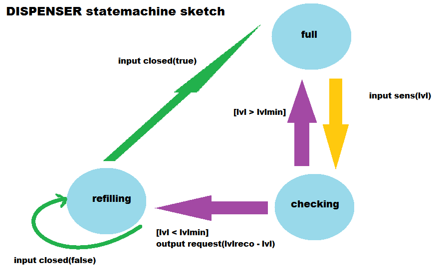
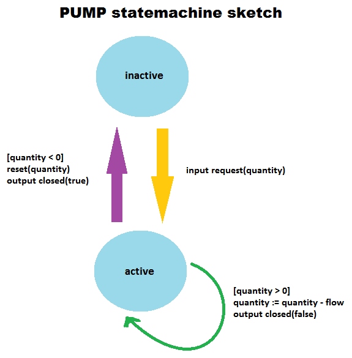

Designing the water system
We will try to design a very simple system.
The Dispenser
The Dispenser is informed by the sensor (modeled by a simulated input) of it's current level of water. If the water is lower than a certain amount (constant parameter LVLMIN), the dispenser will send a "request" signal. And it will ask for an amount of water equals to (LVLRECO - lvl) where "LVLRECO" is a constant parameter giving the recommended level and "lvl" is a variable giving the current level.
When the pump is pumping into the dispenser we want to block the possibility of another request of water in order to have a stable system. As a consequence we also need to know about the current state of the pump.
We can therefore model this dispenser as an object having four attributes :
- "LVLMIN" that is a CONSTANT corresponding to the minimal level of water that is acceptable
- "LVLRECO" that is a CONSTANT corresponding to the recommended level of water
- "lvl" that is a value updated by the sensor and reports the current level of water
- "c" that is a value updated by the pump and that informs whether or not the pump is closed (c==0 if opened and c==1 if closed)
This object must also have three communication channels or "ports" :
- "sens", by which the sensor (not modeled but simulated by inputs to the system) informs the dispenser of the current level of water : "lvl" variable
- "request" by which the dispenser asks the pump for a refill : if lvl < lvlmin the asked quantity = lvlreco - lvl so that after the pumping lvl ≈ lvlreco
- "closed" by which the pump informs the dispenser of it's current state (active or inactive) through updating the "c" variable
The behavior of the Dispenser can be modeled as a state-machine which discriminate into "states" the different sets of possible behaviors of the Dispenser. Here we can discriminate three states :
- "full" where the dispenser is only listening to the sensor and doing nothing else
- "checking" where the dispenser has been updated on the value of "lvl" and checks whether or not it needs a refill
- "refilling" where the dispenser waits for the pump to finish the request it has been asked
In the end, we can draw a rough sketch of the behavior as follows :

The Pump
The Pump is listening to "request" signals from the Dispenser. If it receives one, it will store the requested amount, stop listening for request and pump with a fixed flow rate "FLOW" until the required amount is reached. When it is reached, the pump will resume listening to the Dispenser.
Therefore we can model the Pump with two attributes:
- "FLOW" that corresponds to the flow rate of the pump
- "quantity" that is a value (given through the request port) which corresponds to the quantity of water asked by the dispenser
The Pump object must also have two ports :
- "request" by which the dispenser asks the pump for a refill
- "closed" by which the pump informs the dispenser of it's current state (active or inactive)
The associated state-machine can be modeled with two states:
- "inactive" where the Pump is listening and not pumping
- "active" where the Pump is not listening and pumping
In the end, we can draw a rough sketch of the behavior as follows :
